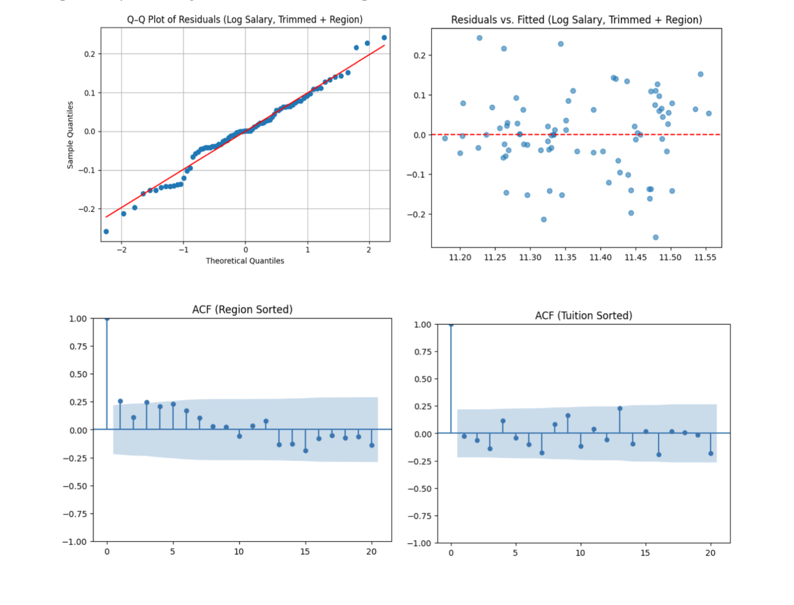

The Impact of Undergraduate Education on Future Earnings
Project Overview
In this project, I examined how factors like university choice, tuition, region, undergraduate population, selectivity, and socioeconomic diversity influence a person’s future mid-career median salary, and whether it is possible to predict financial outcomes based on undergraduate university characteristics. In 2024, college enrollment in the U.S. reached 19.28 million students, reflecting the significant investment many young Americans make in their futures through higher education. Given this, I believe understanding the factors linked to higher mid-career salaries is crucial for students deciding where to spend their next four years. This research aims to identify key predictors of future financial success that could influence undergraduates’ university choices.
Analysis
I analyzed salary data from the 2017 Wall Street Journal/PayScale College Salary Report combined with university data from the National Center for Education Statistics (IPEDS). By merging and processing these datasets, I explored how factors such as tuition, enrollment, financial aid, and other university characteristics relate to long-term earning potential. The analysis provides insights into the financial impact of educational choices, while noting potential challenges including limited sample size, data complexity, and the focus on U.S. institutions, which may affect the generalizability of the findings.
Before interpreting the results of the linear regression model, I verified that the four key assumptions of ordinary least squares (OLS) regression were met: linearity between predictors and the response variable, normally distributed residuals, constant variance of residuals (homoscedasticity), and absence of multicollinearity among predictors. This was supported through data transformations, visual diagnostics, and structural checks to ensure the model’s validity.
The below visualizations illustrate how the 4 key assumptions of linear regression have been satisfied:

With these assumptions satisfied, I proceeded to conduct the ordinary least squares (OLS) regression using the combined dataset from IPEDS and the Wall Street Journal College Salary Report to predict the log-transformed mid-career salary. The goal was to identify how university related factors such as selectivity, tuition, region, and financial diversity impact future salaries. The dependent variable was the log of mid-career salary, with explanatory variables including tuition, selectivity, enrollment, and financial aid distribution. The linear regression model revealed that lower admission rates and higher tuition were positively associated with higher mid-career salaries, supporting the idea that more selective and better-resourced institutions provide long-term economic benefits. Additionally, regional differences and institutional scale contributed meaningfully to salary outcomes, while the percentage of Pell Grant recipients had a negative, but not statistically significant, relationship with future earnings. Overall, the model explained roughly 66% of the variance in mid-career salaries, with statistically significant coefficients for several key predictors.
Additionally, I developed a logistic regression model to predict a binary variable, Is_wealthy, which indicates whether an individual’s mid-career median salary is above $72,000. This model primarily used variables from the merged IPEDS/NCES dataset, as incorporating data from the Wall Street Journal dataset introduced excessive multicollinearity, preventing a proper regression analysis.
I then evaluated model accuracy in predicting future wealth using two ROC curves. The in-sample curve shows performance on the training data, while the second uses a 60/40 train-test split. Both curves have an AUC of 0.97, indicating strong predictive ability. However, the high in-sample score suggests overfitting, and the limited test data size affects the reliability of results. Future analysis with larger datasets and cross-validation is recommended to improve model robustness. Despite limitations, the model performs well given the available data.

Key Insights
Ultimately, this project highlights structural trade-offs in higher education. While institutional prestige and cost are associated with higher future earnings, these benefits may come at the cost of reduced socioeconomic diversity. These relationships reveal strong correlations between institutional characteristics and predicted median mid-career income, although further research should be conducted to establish a causal relationship. These findings offer important insights for prospective students, policymakers, and educators looking to better understand how undergraduate choices shape long-term financial outcomes.
Tools & Methods
- Python (pandas, numpy, statsmodels, matplotlib)
- Exploratory data analysis
- Data cleaning
- Regression analysis
- Model evaluation
Additional Contributors
- Anushna Bardhan